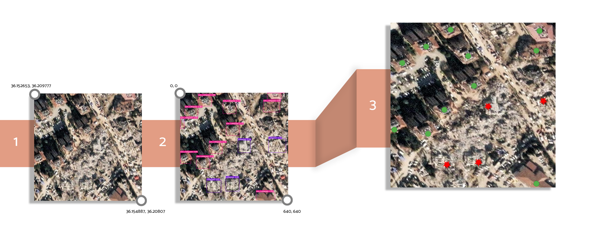

Technical approach to coordinate extraction and object detection
This section presents the methodological framework employed by InferenceVision for transforming object detections obtained from raster imagery into precise geographic coordinates. The methodology integrates deep learning–based object detection with geospatial reference system handling and spatial transformations, enabling reliable conversion from image space to real-world geographic coordinates.
The overall workflow is designed to be modular, reproducible, and scalable, allowing it to operate on very high–resolution (VHR) satellite or aerial imagery. The pipeline consists of three primary stages: coordinate reference system normalization, object centroid computation, and geographic coordinate derivation.

InferenceVision requires all spatial data to be represented in a consistent geographic coordinate reference system. The target CRS is WGS 84 (EPSG:4326), which expresses locations using latitude and longitude and is widely adopted in geospatial analysis and web mapping applications.
Input raster datasets may originate from various projected or geographic coordinate systems. These datasets are reprojected into EPSG:4326 using affine transformations and spatial metadata extracted from the raster. Nearest Neighbor interpolation is applied during reprojection to preserve discrete pixel values, which is particularly important for object detection outputs.
After reprojection, the geographic extent of the raster is extracted as a bounding polygon. The top-left (TL) and bottom-right (BR) corner coordinates of this polygon serve as spatial reference points for subsequent coordinate calculations.
Object detection models produce bounding boxes defined in image space using pixel coordinates. Each bounding box is represented by its minimum and maximum extents along the horizontal and vertical axes: xmin, ymin and xmax, ymax.
To obtain a single representative point for each detected object, the centroid of the bounding box is calculated. This centroid provides a stable spatial reference that minimizes sensitivity to object shape and detection variance.
The centroid of a bounding box is computed as:
Since raster dimensions may vary across datasets, centroid coordinates are normalized relative to the total image width (W) and height (H). This normalization ensures scale invariance and enables consistent mapping between image space and geographic space.
Where:
In the final stage, normalized centroid coordinates are mapped to real-world geographic coordinates using the spatial extent of the raster. This mapping establishes a linear relationship between normalized image space and the geographic coordinate system.
Using the top-left and bottom-right corner coordinates of the raster’s geographic bounding polygon, latitude and longitude values for each detected object are computed as follows:
Where:
This approach ensures spatial consistency and allows detected objects to be accurately referenced within GIS systems, spatial databases, and interactive mapping platforms.
Object detection within InferenceVision is implemented using models provided by the Ultralytics framework, including YOLO-based architectures optimized for high-speed inference and high-resolution imagery. These models are well-suited for geospatial applications due to their balance between accuracy and computational efficiency.
Important: Input raster images must contain valid spatial reference metadata and an explicitly defined CRS to ensure correct geographic coordinate computation.
Follow a practical, step-by-step example demonstrating the full InferenceVision pipeline from object detection to geographic coordinate extraction.
View Usage Guide